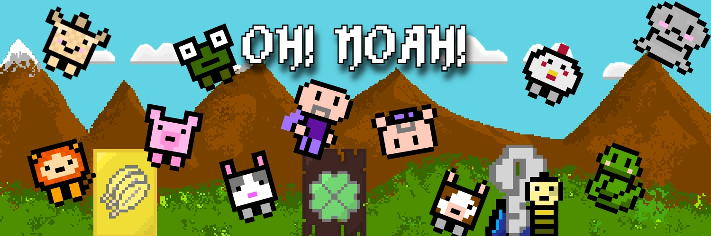
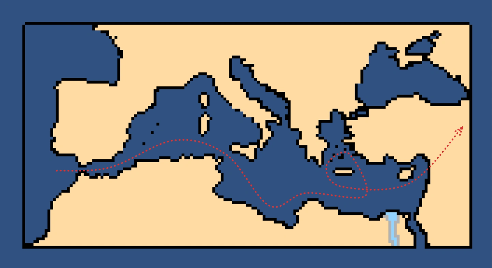
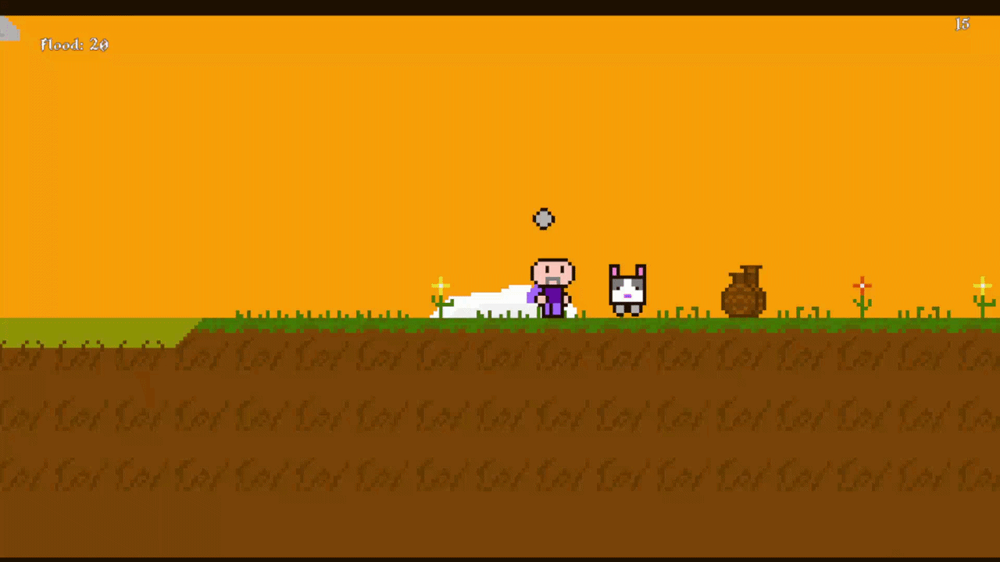
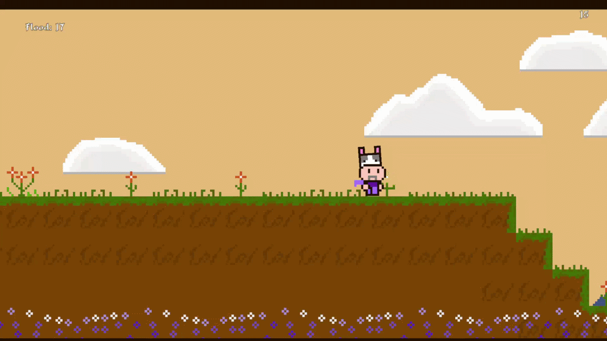
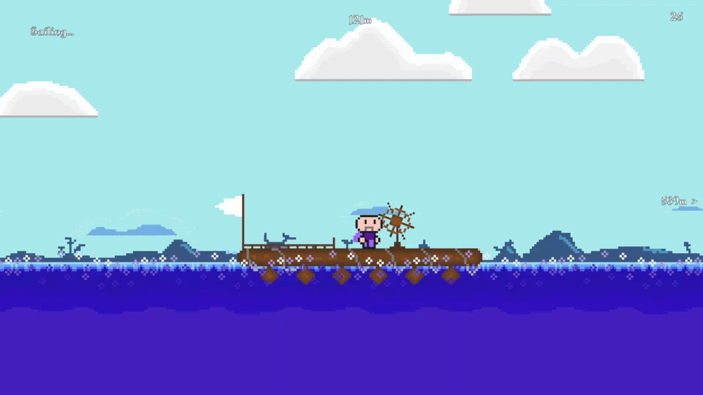
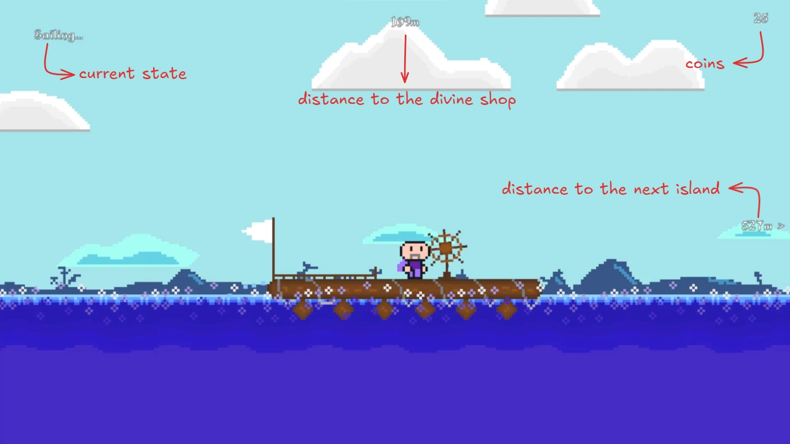
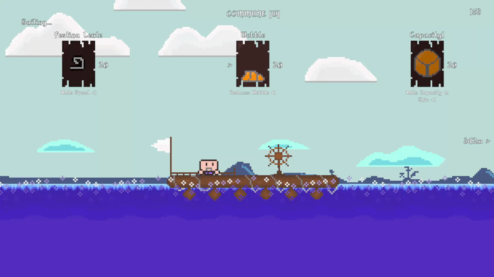
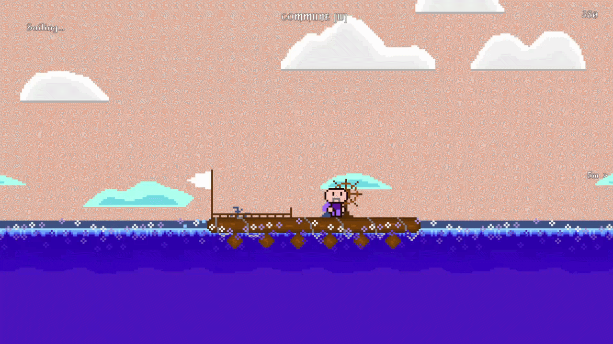

Oh Noah! is a project that emerged from a casual joke and became the result of two months of work. It's a game with a core gameplay loop that progresses as follows: land on islands, collect animals, sink the ship, and use the animals you have to gain permanent powers.

Oh Noah's Route
Moving away from historical accuracy, I redesigned Noah's rather ambiguous route. I designed Noah's adventures to follow a path roughly like this on his journey from the Strait of Gibraltar to Mount Ararat.
Game Mechanics
Animal and Coin Collection

A short gameplay sequence showing both mechanics.
Noah runs, carrying animals found on the islands on his back. Sometimes, he also breaks amphorae that spawn randomly on the islands to collect the coins inside. To enhance the sense of exploration, the spawning of amphorae and animals is managed by a controlled RNG. As the run duration increases, the value of coins inside the amphorae rises, and islands with rarer animals appear more frequently.
Boarding the Ark

A short sequence showing Noah loading a rabbit onto the ark.
When Noah enters the ark carrying an animal, it is automatically placed in a specially designated section, joining him to continue the sea voyage together.
Sailing Systems

A sequence showing Noah sailing with the ark.
As long as Noah is at the helm, the ark moves at a constant speed (which can be upgraded later). When the helm is released, it begins to slow down. We journey peacefully towards the islands, accompanied by parallax effects in the background. During this time, players can periodically access a market (named the Divine Shop) where they can spend their coins.

Some UI elements and their descriptions visible to the player during the sailing state.
The Divine Shop

A sequence showing a tier-one Divine Shop with its various options.
The Divine Shop is the heart of the game's mechanics, where different upgrades across 7 different categories and 3 tiers are applied to the ark and the character. In the Divine Shop, which can be opened at certain intervals, Noah enters a praying animation and is granted certain abilities. After the first-tier cards, the upgrades in the second part become available for purchase. The tiers and variations of the cards are as follows.
Wooden Collection


Stone Collection


Golden Collection


Special Collection


Exploring Islands

A gameplay sequence approaching the island of Isla Del Rey.
As we approach the islands, our ark automatically docks, and we disembark onto the semi-procedurally generated island to continue our search for animals.
Fun fact: All the islands in the game are modified versions of real-world islands. For example, the island named Isla Del Rey represents the Spanish island of Illa del Rei.
Final Verdict
Oh Noah! was a game I especially enjoyed creating, feeling the Mediterranean breeze on my face as I worked. Unfortunately, because the core gameplay loop wasn't engaging enough and I couldn't manage the shop mechanics well, the system remained at an 'economy to be optimized' level. This caused me to stray from the emergent gameplay structure I had initially planned.
This situation both slowed down my development process and weakened the connection between the game's character and its gameplay. Therefore, I decided to carry over a highly simplified version of this project as a minigame into a future game I plan to develop (most likely Novaru).
It was a beautiful journey, but the ark sank. Oh Noah! Anyway.